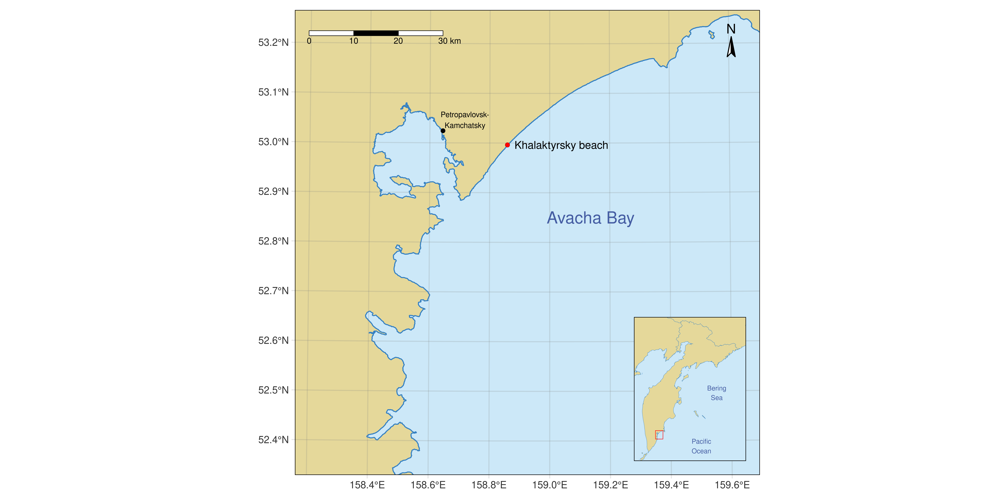
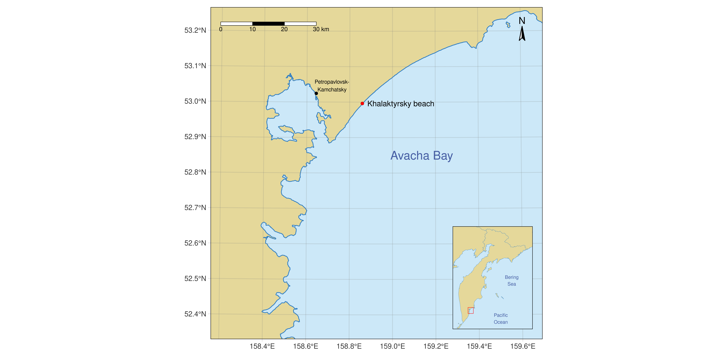
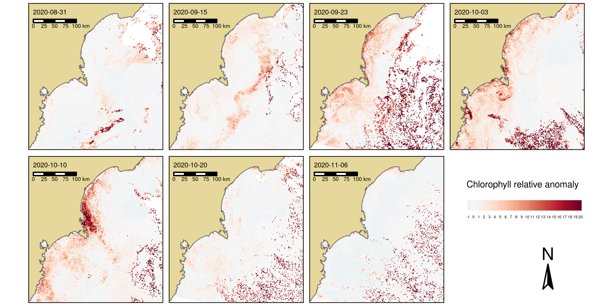
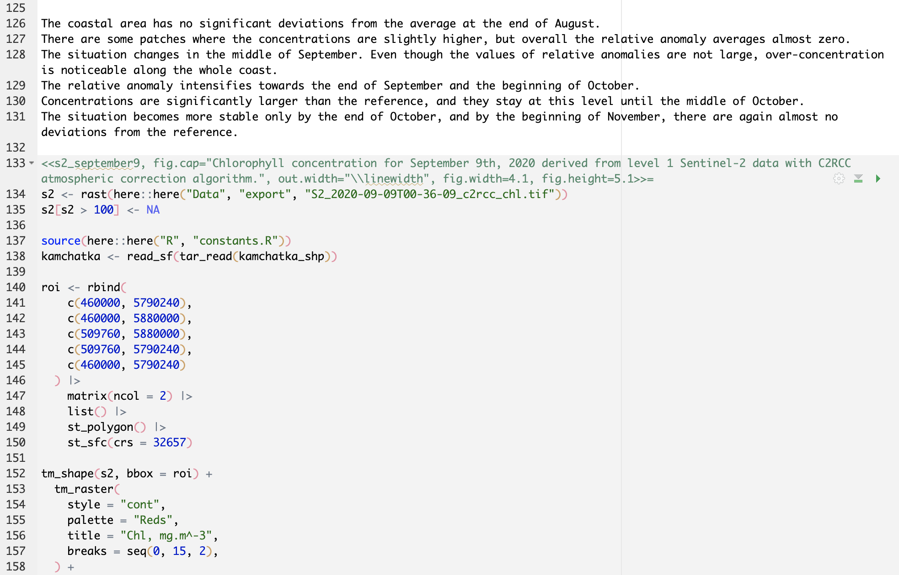

A remote sensing study in the reproducible research framework
Ivan Dubrovin
Skolkovo Institute of Science and Technology
IGARSS 2022
Full title: Remote sensing evidence for the harmful algal bloom explanation of the ecological situation in Kamchatka in autumn of 2020
At the end of September of 2020 media widely reported an environmental disaster on the eastern coast of Kamchatka.
All of theses can be explained by a bloom of toxic algae. Can we additionally support that hypothesis with remote sensing data?

Southeast coast of Kamchatka peninsula.
The primary data source was the Sentinel-3 mission.
Where available, Sentinel-2 MSI3 data [10 m]. Processed using C2RCC4 in SNAP to extract chl concentrations.
Relative chl anomaly. A reference concentration \(\text{Chl-a}^{\text{ref}}\) for any given date is the median across the 61-day period ending 15 days before.
\[ \Delta_r \text{Chl-a} = \frac{\text{Chl-a} - \text{Chl-a}^{\text{ref}}}{\text{Chl-a}^{\text{ref}}}. \]
Visual analysis of the time-series of relative chl anomalies to trace the evolution of a suspected bloom in time.

The evolution of the concentration anomaly does not contradict the timeline of the events.
Literate programming is a paradigm in which natural language is mixed with snippets of code.

All the components all open source and free.
How to automate the data retrieval?
Two parts of the presentation, two sets of conclusions.